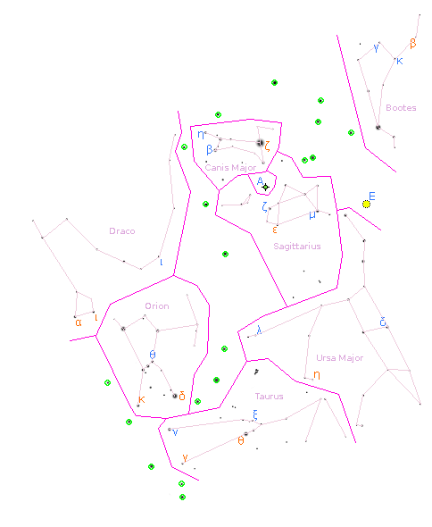

Solution: Patterns
Answer: BUTTERFLIES
Written by Mark
First, we notice that the dots represent stars, perhaps by recognizing Orion's belt, relating the ice cream cone pictogram to Bootes, or finding the overall presentation reminiscent of a star map.
The title, “Patterns”, clues that we are interested in constellations. This is confirmed by the pictograms, which clue constellations in alphabetical order. In fact, most of these clue asterisms, which are patterns used as an aid to identify constellations in the night sky.
The question mark is signficantly bigger than the other pictograms and does not directly clue a constellation. This suggests that there is an additional unknown constellation in the star field alphabetically between Sagittarius and Taurus, possibly enlarged.
| Pictogram | Constellation |
|---|---|
| Ice cream cone | Bootes |
| Dog | Canis Major |
| Dragon's head | Draco |
| Belt | Orion |
| Teapot | Sagittarius |
| Question mark | (unknown at this point) |
| Bull | Taurus |
| Big dipper | Ursa Major |
We then proceed to identify the clued constellations from the star field, with the help of the asterisms or otherwise. Noticing that the orange and blue Greek letters make up the first 10 and 14 letters of the Greek alphabet respectively, we deduce that they provide orderings on the labeled stars. While we are unable to match A and E with anything at this stage, the fact that they are capitalized indicates that they should be treated differently from the other letters in the cluephrase. Taking the first letters of the labeled stars, we get the cluephrases “EXTRA STARS” (orange) and “(?) AND (?) NAMESAKES” (blue).

| Label | Star name | Constellation |
|---|---|---|
| α | Eltanin | Draco |
| β | Xuange | Bootes |
| γ | Tianguan | Taurus |
| δ | Rigel | Orion |
| ε | Ascella | Sagittarius |
| ζ | Sirius | Canis Major |
| η | Tania Borealis | Ursa Major |
| θ | Aldebaran | Taurus |
| ι | Rastaban | Draco |
| κ | Saiph | Orion |
| Label | Star name | Constellation |
|---|---|---|
| α | (unknown at this point) | |
| β | Adhara | Canis Major |
| γ | Nekkar | Bootes |
| δ | Dubhe | Ursa Major |
| ε | (unknown at this point) | |
| ζ | Nunki | Sagittarius |
| η | Aludra | Canis Major |
| θ | Mintaka | Orion |
| ι | Edasich | Draco |
| κ | Seginus | Bootes |
| λ | Alula Borealis | Ursa Major |
| μ | Kaus Australis | Sagittarius |
| ν | Elnath | Taurus |
| ξ | Secunda Hyadum | Taurus |
The orange cluephrase points our attention to the extra stars in the image. The IAU star maps featured prominently on Wikipedia prove to be a useful resource, particularly if overlayed on the puzzle image with an image editor. Looking at the constellations alphabetically between Sagittarius and Taurus, we find that the extra stars match the constellation of Scorpius, and that the symbol labeled E matches the Butterfly Cluster. Hiding everything in the puzzle except the extra stars makes this step easier.
At this point, we might notice that the symbol used for E is the same as the one used in the IAU star map (assuming that we are using the IAU star maps as our primary reference). Looking up the legend, we find that the symbol used for A denotes a planetary nebula. The most well-known planetary nebula in Scorpius is the Bug or Butterfly Nebula, which is located precisely where A is. The blue cluephrase tells us that we want the namesakes of the Butterfly Cluster and the Butterfly Nebula, giving the answer BUTTERFLIES.
Author’s Notes
This puzzle was constructed using the night sky simulation software Stellarium, instead of any particular star map. Stars were included based on a magnitude (brightness) threshold of 4.30, and all constellations besides Scorpius were made to be the same size relative to each other.
The only exception to the brightness threshold is ν Draconis (Kuma), which was added since many maps include it as part of the the dragon's head. In testsolving, excluding it made Draco significantly harder to identify and drew unwanted attention to its absence.
There are a few aspects of this puzzle that might trip up first-time stargazers:
- Unintuitively, constellations are canonically defined not by their connecting lines (which vary significantly between sources), but by their boundaries. Combined with the fact that constellation lines often include very dim stars beyond the magnitude threshold (e.g. the fourth star in Draco's head), this may give the false impression that there are missing stars in the image.
- The IAU star maps do not differentiate dim stars of different brightnesses very well, leading to a lot of visual noise for solvers using them as their primary reference.
- Despite its fame, the Butterfly Nebula is very visually dim and small and isn't included on the IAU star maps.